Sea moss · Ingredient notes
Which sea moss? Two plants, one name on the jar.
Cold-water Chondrus crispus and warm-water Eucheuma cottonii both get sold as Irish moss. They are different plants from different oceans and they behave differently in the jar. This is how I tell them apart, and which one I would suggest for what.
By Reiss Davies Ausar2 September 20269 minute read
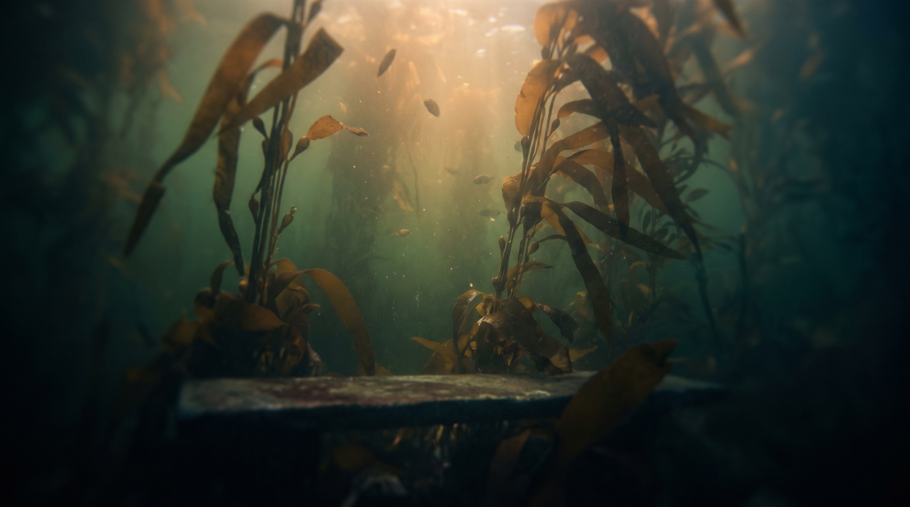
Most weeks somebody comes into the shop with a jar they bought online. It is usually a pale, thick, rubbery gel with Irish moss written on the front, and they have paid forty pounds or so for it. They want to know why mine looks different. Mine is darker and looser and it smells of the sea. Theirs, more often than not, looks like hair gel.
The reason is that they were not sold the plant they thought they were buying. Nobody necessarily lied. The words sea moss cover several different red algae, and over the last few years the cheaper one has been sold under the name of the dearer one so often that most people assume they are the same thing. They are not, and once you have seen the two side by side it is easy to tell them apart.
01What sea moss actually is
Sea moss is a red alga, from a group called Rhodophyta. Red algae are among the oldest living things on the planet. They were photosynthesising in the sea long before anything had moved onto land, which is part of why I find them interesting, and every plant we eat descends from something like them.
Within that group there are two species you are likely to meet in a jar in this country.
- Chondrus crispus, the original Irish moss. Cold Atlantic water, the rocks off Ireland, Scotland, Brittany, Nova Scotia. It has small, flat, fan-shaped fronds that fork repeatedly, and it dries to a deep purple or brownish red, sometimes nearly black. This is the plant Irish families ate through the famine years, and the one the old herbals mean when they say carrageen.
- Eucheuma cottonii, the tropical one. Warm Indian Ocean and Pacific water. It is farmed on lines strung between stakes in shallow lagoons in Tanzania, Zanzibar, the Philippines and Indonesia. The branches are thick and round, a bit like a knobbly coral, and the colour runs from pale gold to purple. It grows quickly and it is cheap to produce, so most of the sea moss sold anywhere in the world is this plant.
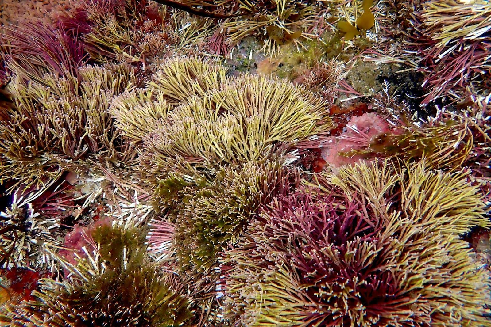
There is a third, Gracilaria, which turns up in some Caribbean gel under the name Jamaican moss, or again as Irish moss. It is also warm-water, farmed and cheap. I will stick mostly to the first two here, because those are the two I sell.
Most of the Irish moss sold in Britain has never been within a thousand miles of Ireland.
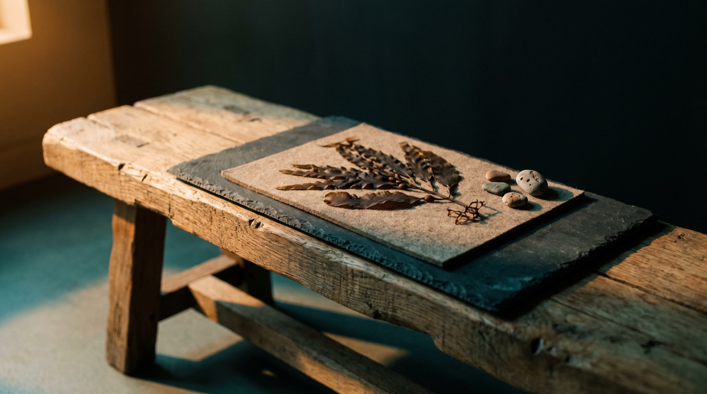
02How to tell them apart on the bench
I do this by eye and by smell, and you can learn to do the same.
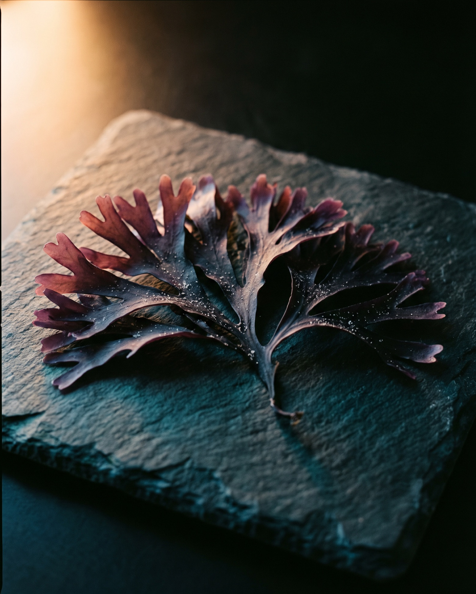
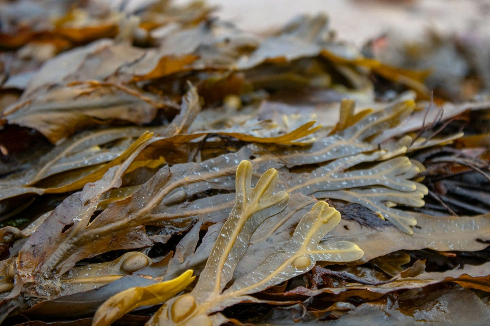
Dried
- Shape. Chondrus is flat and branching, a little like a small fern or a piece of fan coral, and the fronds are thin enough to see light through. Eucheuma is round in section, about as thick as a pencil, and looks more like a cluster of short fingers.
- Colour. Chondrus dries dark, anywhere from purple through maroon and brown to nearly black. Eucheuma dries pale, from straw and gold to off-white, sometimes with a lilac tint. If a bag of Irish moss is golden and translucent, it is not Chondrus.
- Smell. Wild-harvested Chondrus arrives with a fine crust of sea salt on the fronds and smells strongly of low tide. Farmed Eucheuma is usually rinsed and sun-dried on tarpaulins and does not smell of much at all.
As a gel
- Chondrus makes a softer, looser, darker gel. Mine varies between a cranberry colour and something closer to mud, depending on the harvest.
- Eucheuma makes a stiff, glossy, pale gel that holds its shape on the spoon. It is very high in carrageenan, the thickener the food industry extracts from it, and that is what gives it the hair-gel look.
On the label
A good label tells you the species. If it only says sea moss or Irish moss with no Latin name, it is probably Eucheuma, because a seller who has paid for wild Atlantic Chondrus tends to say so. Watch for the words pool grown and aquaculture as well. Chondrus is not farmed in pools, so if a label says that, it is not Chondrus.
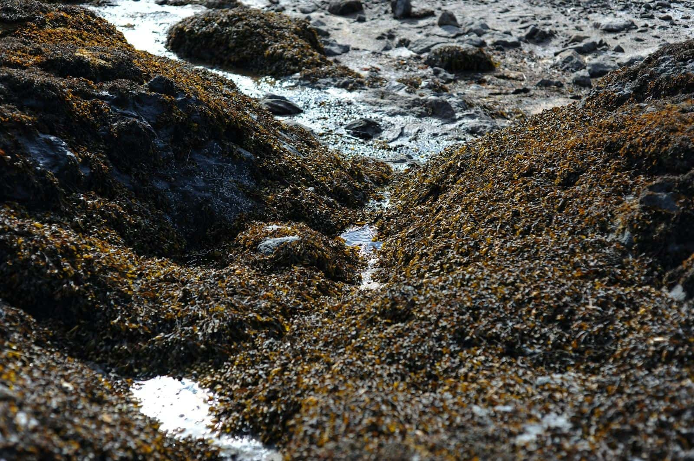
03What is in it, and what I am allowed to say about that
Sea moss is a mineral-rich food. It contains iodine, magnesium, calcium, iron, zinc, selenium and several B vitamins, along with the long sugar chains that make it gel. The two species have a broadly similar profile. The differences are in the proportions, and in how much of the jar is carrageenan.
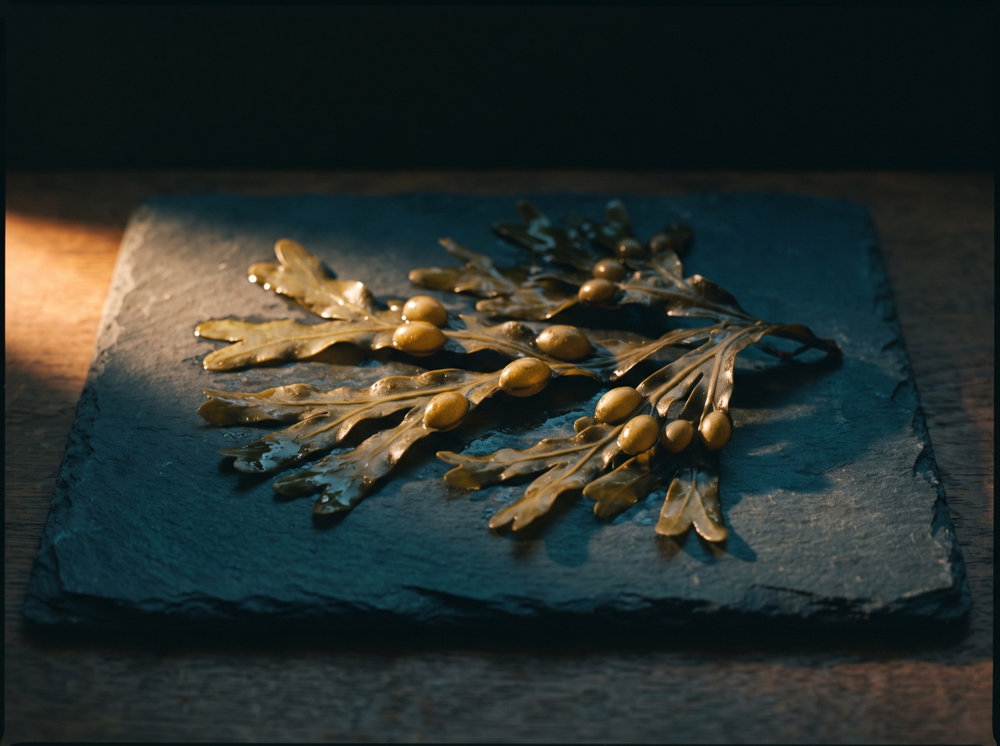
I should be clear about what I can and cannot say here. I run a food business in England, and the only health claims I am permitted to make are the ones on the Great Britain register. Those attach to a named nutrient rather than to a plant, and only where I can show the product contains enough of that nutrient. For the gel I cannot show that, because the iodine in a spoonful of seaweed varies with the harvest and I will not print a figure I cannot back up. For Seaking, where every capsule is measured at 75 µg, I can. So the one sentence I am allowed is this.
Iodine contributes to normal thyroid function and to normal energy-yielding metabolism. Two capsules of Seaking contain 150 µg, which is the adult reference intake.
Everything else you have read about sea moss online is one of three things: somebody's own experience, which they are entitled to describe and I am not; a claim nobody has managed to prove to the standard the law asks for; or a claim that is illegal to make and is being made anyway. I would rather give you one sentence I can stand behind than ten I cannot. What a spoonful does for you is something you will find out by taking it, and if you do, I would like to hear about it.
04Gel or capsules
This is the question I get asked most, and the answer depends on what your mornings are like.
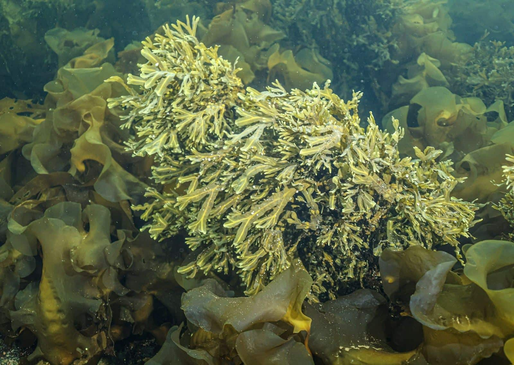
| Gel | The whole plant, soaked and blended with water, with nothing taken out. It lives in the fridge and lasts 28 days once opened, or longer frozen. You can take it off a spoon, in tea, in a smoothie, or use it on your skin. This is the traditional way and it is how I take it. |
|---|---|
| Capsules | The same plant dried and milled, with a measured dose in every capsule. It travels well, keeps in a drawer and carries a printed iodine figure, which matters if you need to count. You lose the morning ritual, which some people miss and some do not. |
If you are new to sea moss and you are at home most mornings, start with the gel. If you travel a lot, or you have a thyroid condition and want to know how much iodine you have taken, Seaking is the better choice.
05How I take it
One tablespoon first thing in the morning, before I have eaten anything. Straight off the spoon, then a glass of water.
Some people cannot get on with the texture. If that is you, stir it into a warm tea with a spoonful of honey until it dissolves, or blend it into a smoothie. It will thicken the smoothie a little. It also goes into soup, blended in at the end.
One spoonful is the serving. If you missed yesterday, do not take two today. Seaweed contains iodine, and iodine is one of the nutrients where too much is a genuine problem.
The plain Chondrus gel can also be used on skin and hair. Leave it on for up to an hour, rinse with water and pat dry. I added that to the jar because customers kept telling me they were already doing it.
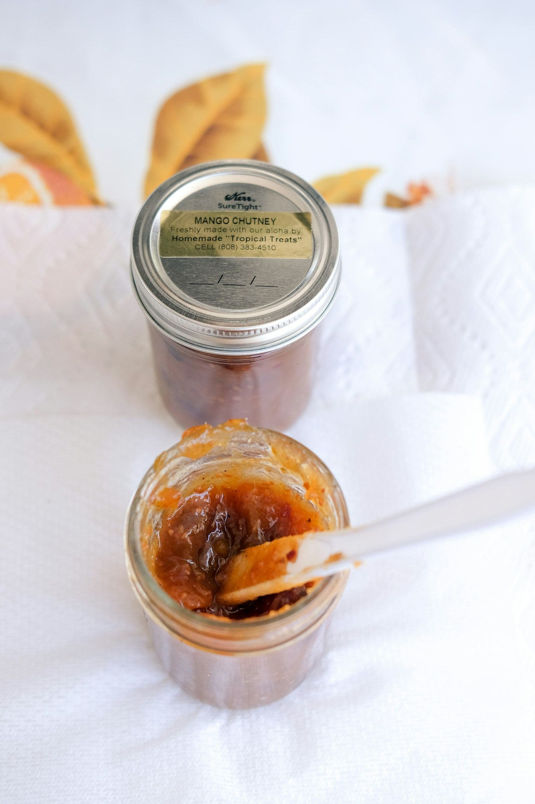
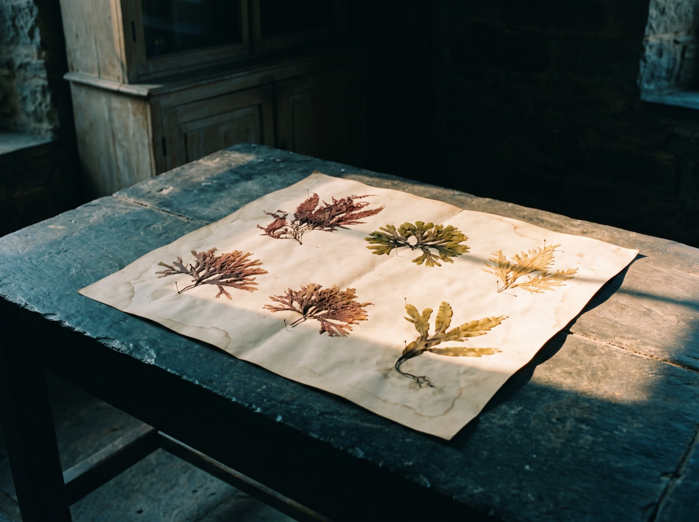
06Why your gel went watery, and how to store it
There are three usual reasons, and this is the order I would check them in.
- A dirty spoon. Anything that has been in your mouth or in another jar carries bacteria into a wet, mineral-rich gel, and the gel starts to break down within days. Use a clean, dry spoon every time. It sounds fussy but it makes the biggest difference.
- Warmth. A jar left on the side while you make breakfast every morning spends a couple of hours a day out of the fridge, and over a fortnight that adds up. Take your spoonful, put the lid on and put it straight back.
- Age. I print 28 days on the jar. A gel that has gone thin, sour or fizzy after that has had its time, and it is not worth pushing on with.
If you know you will not finish a jar in a month, freeze half of it the day it arrives. One of my customers keeps a stock in the freezer, which is sensible. Frozen gel thaws overnight in the fridge and is fine to use.
07Who should not take it
I would rather lose a sale than sell you something that is wrong for you, so please read this part.
- Overactive thyroid. If you have hyperthyroidism, sea moss is not for you, because of the iodine.
- Thyroid medication of any kind. Talk to your GP or pharmacist first. If they are happy for you to take it, the capsules are better because the dose is known.
- Pregnant or nursing. Iodine needs change in pregnancy, so ask your midwife or GP before you start.
- Blood-thinning medication. Avoid the Purple Mwani in particular, as its label says.
- Children. It is not for them, so keep it out of their reach.
None of this is medical advice. It is the list of questions I ask across the counter before I sell anyone a jar, and I would ask you the same ones.
08Which jar
There are four sea moss products on my shelf. This is how I would choose between them.
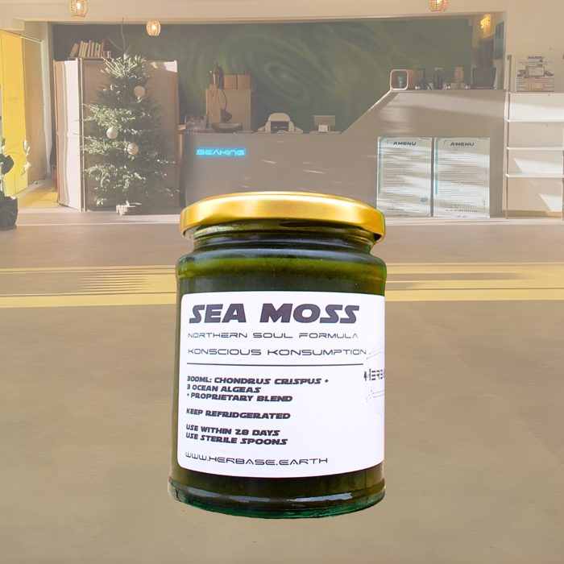
Northern Soul
from £34.99Start here. Cold-water Chondrus crispus gel with four algae from three families. The one for every morning. 300 ml or 500 ml, in a glass jar.
Choose a size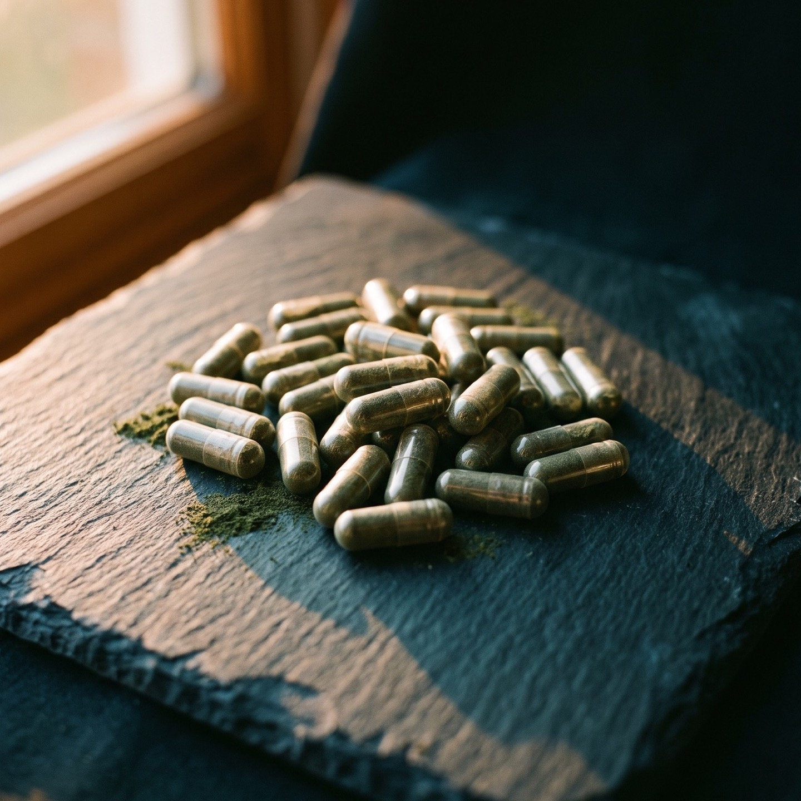
Seaking
£39.99The same formula in capsules. 50 capsules at 800 mg, with 75 µg of iodine in each. For travelling, or if you need to know the dose.
Add to bag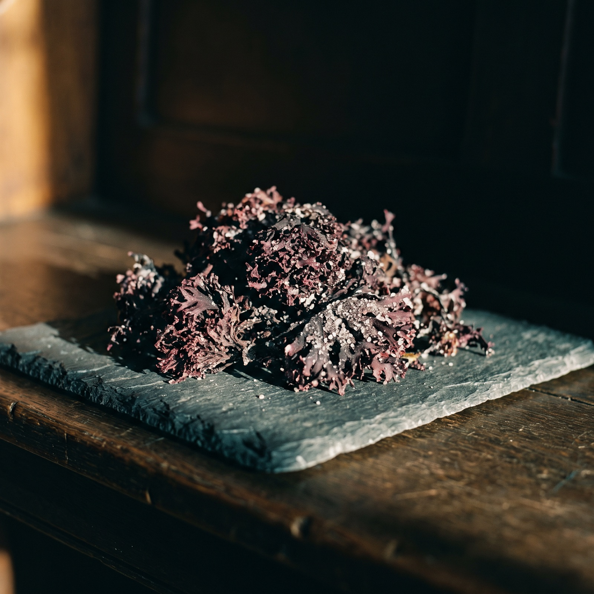
Chondrus Crispus
£34.99The single-ingredient gel. The Atlantic plant, water and Omega DHA oil. This is the one to use on skin and hair.
Add to bagPurple Mwani
£24.99The warm-water species, sold as what it is. Eucheuma cottonii from Tanzania, where we visited the farms in 2020. Named and priced accordingly.
Add to bagIf you are still not sure, come into the shop on Smithdown Road, Tuesday to Sunday. Bring the jar you bought online and I will have a look at it with you.